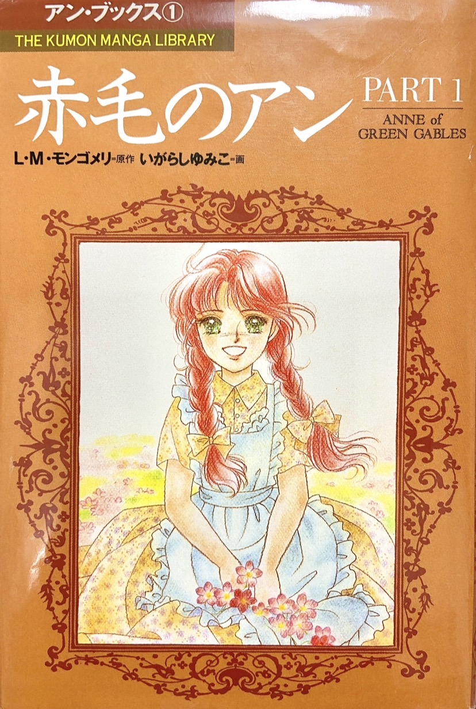

名作『赤毛のアン』を漫画化した作品です。
主人公のアンは、明るく想像力にあふれた天真爛漫な少女です。
アンのまっすぐな言葉や豊かな感性に触れながら、幼い私は物語の世界に夢中になっていました。
漫画では、自然豊かな風景や温かみのある暮らしが美しく描かれています。
登場する食べ物や洋服、何気ない日常のひとつひとつが、当時の私にはきらきらと輝いて見えました。
『赤毛のアン』の物語には、幼い頃の私の憧れがたくさん詰まっています。
原作：L・M・モンゴメリ 画：いがらしゆみこ
出版社：くもん出版 出版年：1997年

名作『赤毛のアン』を漫画化した作品です。
主人公のアンは、明るく想像力にあふれた天真爛漫な少女です。
アンのまっすぐな言葉や豊かな感性に触れながら、幼い私は物語の世界に夢中になっていました。
漫画では、自然豊かな風景や温かみのある暮らしが美しく描かれています。
登場する食べ物や洋服、何気ない日常のひとつひとつが、当時の私にはきらきらと輝いて見えました。
『赤毛のアン』の物語には、幼い頃の私の憧れがたくさん詰まっています。